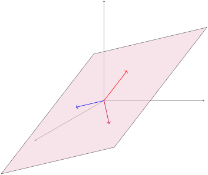

where \(T\) contains a vector missing from \(S\text{.}\) Which of the following is true?
\(\vspan S\) contains a vector missing from \(\vspan T\text{.}\)
\(\vspan T\) contains a vector missing from \(\vspan S\text{.}\)
\(\vspan S\) and \(\vspan T\) contain the same vectors.
Definition2.4.3.
We say that a set of vectors is linearly dependent if one vector in the set belongs to the span of the others. Otherwise, we say the set is linearly independent.

Figure14.A linearly dependent set of three vectors
You can think of linearly dependent sets as containing a redundant vector, in the sense that you can drop a vector out without reducing the span of the set. In the above image, all three vectors lay in the same planar subspace, but only two vectors are needed to span the plane, so the set is linearly dependent.
What does this tell you about solution set for the vector equation \(x_1\vec{v}_1+x_2\vec{v}_2+x_3\vec{v}_3 + x_4\vec w=\vec{0}\text{?}\)
It is inconsistent.
It is consistent with one solution.
It is consistent with infinitely many solutions.
(d)
Which of the following is the best conclusion obtained when we solved \(x_1\vec{v}_1+x_2\vec{v}_2+x_3\vec{v}_3 + x_4\vec w=\vec{0}\text{?}\)
A pivot column in the augmented matrix \(\RREF \left[\begin{array}{cccc|c}
\vec v_1 & \vec v_2 & \vec v_3 & \vec w & \vec 0 \\
\end{array}\right]\) guarantees the linear independence of \(\{\vec v_1,\vec v_2,\vec v_3,\vec w\}\) by preventing contradictions.
A pivot column in the coefficient matrix \(\RREF \left[\begin{array}{cccc}
\vec v_1 & \vec v_2 & \vec v_3 & \vec w \\
\end{array}\right]\) guarantees the linear independence of \(\{\vec v_1,\vec v_2,\vec v_3,\vec w\}\) by preventing contradictions.
A non-pivot column in the augmented matrix \(\RREF \left[\begin{array}{cccc|c}
\vec v_1 & \vec v_2 & \vec v_3 & \vec w & \vec 0 \\
\end{array}\right]\) guarantees the linear dependence of \(\{\vec v_1,\vec v_2,\vec v_3,\vec w\}\) by describing a linear combination of one vector in terms of the others.
A non-pivot column in the coefficient matrix \(\RREF \left[\begin{array}{cccc}
\vec v_1 & \vec v_2 & \vec v_3 & \vec w \\
\end{array}\right]\) guarantees the linear dependence of \(\{\vec v_1,\vec v_2,\vec v_3,\vec w\}\) by describing a linear combination of one vector in terms of the others.
Fact2.4.6.
For any vector space, the set \(\{\vec v_1,\dots\vec v_n\}\) is linearly dependent if and only if the vector equation \(x_1\vec v_1+ x_2 \vec v_2+\dots+x_n\vec v_n=\vec{0}\) is consistent with infinitely many solutions.
Likewise, the set of vectors \(\{\vec v_1,\dots\vec v_n\}\) is linearly independent if and only the vector equation
is linearly dependent (the part that shows its linear system has infinitely many solutions).
Activity2.4.8.
(a)
Write a statement involving the solutions of a vector equation thats equivalent to each claim:
(i)
The set of vectors \(\left\{ \left[\begin{array}{c}
1 \\
-1 \\
0 \\
-1
\end{array}\right] , \left[\begin{array}{c}
5 \\
5 \\
3 \\
1
\end{array}\right] , \left[\begin{array}{c}
9 \\
11 \\
6 \\
2
\end{array}\right] \right\}\) is linearly independent.
(ii)
The set of vectors \(\left\{ \left[\begin{array}{c}
1 \\
-1 \\
0 \\
-1
\end{array}\right] , \left[\begin{array}{c}
5 \\
5 \\
3 \\
1
\end{array}\right] , \left[\begin{array}{c}
9 \\
11 \\
6 \\
2
\end{array}\right] \right\}\) is linearly dependent.
(b)
Explain how to determine which of these statements is true.
Observation2.4.9.
Compare the following results:
A set of \(\IR^m\) vectors \(\{\vec v_1,\dots\vec v_n\}\) is linearly independent if and only if \(\RREF\left[\begin{array}{ccc}\vec v_1&\dots&\vec v_n\end{array}\right]\) has all pivot columns.
A set of \(\IR^m\) vectors \(\{\vec v_1,\dots\vec v_n\}\) is linearly dependent if and only if \(\RREF\left[\begin{array}{ccc}\vec v_1&\dots&\vec v_n\end{array}\right]\) has at least one non-pivot column.
A set of \(\IR^m\) vectors \(\{\vec v_1,\dots\vec v_n\}\) spans \(\IR^m\) if and only if \(\RREF\left[\begin{array}{ccc}\vec v_1&\dots&\vec v_n\end{array}\right]\) has all pivot rows.
A set of \(\IR^m\) vectors \(\{\vec v_1,\dots\vec v_n\}\) fails to span \(\IR^m\) if and only if \(\RREF\left[\begin{array}{ccc}\vec v_1&\dots&\vec v_n\end{array}\right]\) has at least one non-pivot row.
Activity2.4.10.
What is the largest number of \(\IR^4\) vectors that can form a linearly independent set?
\(\displaystyle 3\)
\(\displaystyle 4\)
\(\displaystyle 5\)
You can have infinitely many vectors and still be linearly independent.
Activity2.4.11.
Is it possible for the set of Euclidean vectors \(\{\vec v_1, \vec v_2,\ldots, \vec v_n, \vec 0\}\) to be linearly independent?
Yes
No
Subsection2.4.3Individual Practice
Remark2.4.12.
Recall that in Activity2.2.1 we used the words vector, linear combination, and span to make an analogy with recipes, ingredients, and meals. In this analogy, a recipe was defined to be a list of amounts of each ingredient to build a particular meal.
Activity2.4.13.
Consider the statement: The set of vectors \(\left\{\vec{v}_1,\vec{v}_2,\vec{v}_3\right\}\) is linearly dependent because the vector \(\vec{v}_3\) is a linear combination of \(\vec{v_1}\) and \(\vec{v}_2\text{.}\) Construct an analogous statement involving ingredients, meals, and recipes, using the terms linearly (in)dependent and linear combination.
Activity2.4.14.
The following exercises are designed to help develop your geometric intuition around linear dependence.
(a)
Draw sketches that depict the following:
Three linearly independent vectors in \(\IR^3\text{.}\)
Three linearly dependent vectors in \(\IR^3\text{.}\)
(b)
If you have three linearly dependent vectors, is it necessarily the case that one of the vectors is a multiple of the other?
Prove the result of Observation2.4.9, by showing that, given a set \(S = \{\vec{v}_1,\vec{v}_2,\ldots,\vec{v}_n\}\) of vectors, \(S\) is linearly independent iff the equation \(x_1\vec{v}_1 + x_2\vec{v}_2 + \ldots\ + x_n\vec{v}_n = \vec{0}\) is only true when \(x_1 = x_2 = \cdots = x_n = 0\text{.}\)